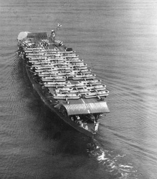
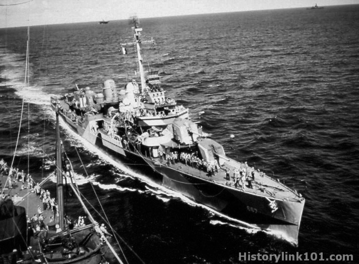

オンラインで相手と通信し、戦艦や航空母艦、駆逐艦を使って戦う戦術ゲームです。
各艦には特性があり、特性をいかし上手く敵を倒そう！
自身の艦隊指揮し、勝利に導きましょう。
戦艦
高い攻撃力、高い耐久値、総合的に見ると艦の中では圧倒的な火力を誇る。
しかし、弱点として速度がほぼ無いことにある。扱い方は難しいいが、上手に利用すれば盾にもなるし矛にもなるだろう。
航空母艦
戦艦とは違い、安定した強さを持てっている。特徴的なのは、その長い射程にあるだろう。艦載機を利用した、遠距離攻撃は敵の脅威になるはずだ。
だが、デメリットも存在する。低い耐久値は、大きな弱点だ。周りの艦で守ってあげよう。
駆逐艦
ほかの艦にはない、ずば抜けた速度はこの艦の持ち味だ。
ほかの、ステータスに関してはかなり劣っている。速度をいかした動きをするのが良いな戦略だ。
http://free-images.gatag.net/tag/battleships
http://historylink101.com/ww2_navy/org/ships/NavalDestroyers/1731.html